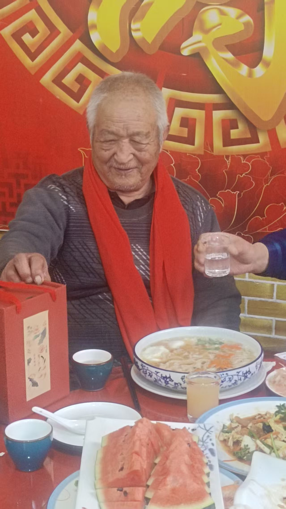

20260412健康长寿与抽烟喝酒无关
原始对话记录
贺父亲九十大寿
[呲牙][呲牙]
不像九十吧
[强][强][强]不像
[强][强][强]
[蛋糕][玫瑰][玫瑰][玫瑰][福][福][福][庆祝][庆祝][庆祝]
八十八岁的时候，很虚，走路就喘
现在不喘了
生日快乐🎂🎉🎊
一生抽烟 ，
爷爷万福[抱拳][抱拳][抱拳]
旱烟，就是农村那种烟叶，
中医里旱烟好像对身体好
一桌的亲戚，六七十岁，浑身是病，所以我说健康长寿跟抽烟喝酒没关系
[呲牙][呲牙]
非典，新冠老两个都没事
常年不感冒
我都说感冒菌都给熏跑了
据说非典的时候抽烟的和带眼镜的得的少[呲牙]
好像记得当初有这样的一个数据
所以，我们喝酒，最少一杯半
一杯52度
一杯半才达标
75度以上
[呲牙][呲牙]
[呲牙][呲牙]尤其是新冠，75度酒精能杀死病毒
劝酒良方
一杯50度
加半杯25度
以下为编者整理的主题文章
编者整理 · 主题文章
一桌六七十岁的亲戚
导读：父亲九十大寿，桌上一圈六七十岁的亲戚，浑身是病。那句原话就落在这里：健康长寿跟抽烟喝酒没关系。桌子这一头是烟酒，那一头是两张拍片。
那天是父亲的九十大寿。
桌上摆着蛋糕，一圈亲戚举着手机拍。有人说，不像九十吧。我看了看照片，确实不像。
八十八岁那年，他走路是喘的。现在不喘了。
他一生抽烟。旱烟，就是农村那种烟叶。有人在席上说，中医里旱烟好像对身体好。非典、新冠，老两口都没事，常年不感冒。
[呲牙]我就说，感冒菌都给熏跑了。
一桌的亲戚，六七十岁，浑身是病。所以我说，健康长寿跟抽烟喝酒没关系。
接着就是劝酒的话头。我们喝酒，最少一杯半。一杯52度，一杯半才达标，75度以上。有人说，尤其是新冠，75度酒精能杀死病毒。一杯50度，加半杯25度，桌上管这叫劝酒良方。
酒桌上的话，半真半假。我记下来，也就记下来。
别处还有一笔，是两位老人的身体。我回到家，父亲说膝盖疼，带他去西边不远私立医院拍了个片。医生说，跟三十岁年轻人骨骼一样，一点疏松也没有，半月板完好。再问原因，原来是两人又去地里锄草，累的。医生都说不可思议，少见九十岁了，骨骼还这么好。
同一页写着，两老人身体指标，有可能跟我念力有关。还写着四个字，越老身体越好。二十多岁时劳累，腰椎习惯性脱位，好了；两膝盖内侧半月板损伤，好了；身上两处损伤的筋疙瘩，消失了。
烟酒那头，和拍片这头，本来是两件事。放在一张寿宴的桌子上，就成了一个说不太清的对照。
敬酒的人还在举杯。父亲坐在主位，看不出九十。
说明与免责：本站为民间修炼、民俗文化与传统文化资料的整理与记录，内容源自传承者口传与个人修习体会，仅供文化交流与研究参考，不构成医疗、健康、投资或任何功效承诺。所述内容属传统术数范畴，请理性看待；如身体不适，请及时就医。请遵守法律法规与公序良俗。